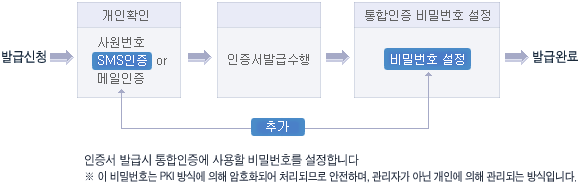

- 인증센터 이해하기
- 인증서비스 안내
- 인증서란?
- 사용자안내서
- 도움말
- 전자서명이란?
- 만화로보는 전자서명
-
- 개인확인시 SMS 인증 또는 메일인증 추가 인증서 발급시 통합인증 비밀번호 설정
- 
-
- 01. 이번 보완작업으로 인증서 발급작업은 어떤 점이 달라집니까?
- 인증서를 발급하는 방식은 똑 같습니다. 하지만, 타인에 의한 인증서 발급을 방지하기 위하여 발급시 개인확인 절차에 (SMS인증)이 추가되며, 외부 은행권, 금융권과 마찬가지로 발급시 마다 (비밀번호를 설정)을 해야 합니다. 아울러 비밀번호는 어느 곳에도 보관되지 않으므로 잘 기억해 둬야 합니다.
- 02. 핸드폰이 없는 사람은 인증서를 발급받을 수 없나요?
- 아닙니다. 핸드폰이 없으신 분도 옆에 계신 동료분의 핸드폰 번호를 입력해서 SMS인증 번호를 받으실 수 있습니다. 아울러 타인이 사번, 주민번호를 알아서 인증서를 발급해도 SMS인증을 보낸 핸드폰번호가 남기 때문에 발급자를 추적할 수 있습니다.
- 03. 통합인증 비밀번호를 잊어버리면 어떻게 하나요?
- 비밀번호를 잊어버릴 경우 개인 PC 및 서버 등 어느 곳에도 보관되지 않기 때문에 찾을 방법은 현실적으로 없습니다. 그러므로, 인증서를 재발급받으셔야 합니다.
- 04. 암호가 보관되지 않는다는데, 어떻게 로그인 확인을 해서 사용자가 정확한 암호를 입력했는지 확인하나요?
- PKI 인증방식은 발급시 개인이 입력한 암호인 개인키와 이에 대응하는 공개키가 서버에 생성되어 보관됩니다. 서버에 보관된다고 해서 공개키를 가지고 개인키(통합인증 암호)를 찾아낼 수는 없습니다. 대략적으로 설명을 드리면 아래와 같이 개인이 입력한 암호에 소인수분해가 되지 않는 무지 큰 소수를 곱해서 공개키를 생성해 냅니다. 즉, 공개키를 안다고 해서 소수를 찾을 수 없기 때문에 개인키는 알 수가 없습니다.
개인키 (통합인증암호) × 무지무지 큰 소수 = 공개키
하지만, 입력한 암호가 정확한지는 공개키에서 개인키를 나누어서 쉽게 알 수 있기 때문에 암호보관 없이도 로그인처리를 할 수 있습니다.
- 05. 우리가 일반적으로 접속하는 사이트인 네이버, 다음 및 별도 ID/PW를 입력하는 사이버교육원 등의 사내시스템은 암호가 어디에 저장되나요?
- 90년대 초반부터 사용되어온 ID/패스워드 방식의 인증으로 개인이 운영하는 사이트에서도 사용되고 있습니다. 이 방식의 경우 서버에 아이디와 암호가 1:1로 보관되고 있기 때문에 암호 분실이 신고되면 관리자가 암호를 알려 줄 수 있으며, 그 암호를 이용해서 특정인의 정보를 볼 수도 있으며, 서버
관리자가 지속적으로 바뀌는 경우 개인정보 유출 가능성도 더욱 증가할 확률이 있습니다. 그래서, 최근 삼성, LG 등 대기업 및 모든 기관에서 개인의 머릿속에만 암호가 보관되는 PKI방식 인증을 통합인증으로 개선하여 사용하고 있는 추세입니다. ERP에서도 PKI를 사용하여 인증처리를 하려고 하는데 이는 인증의 보안성, 안정성이 탁월하기 때문입니다.